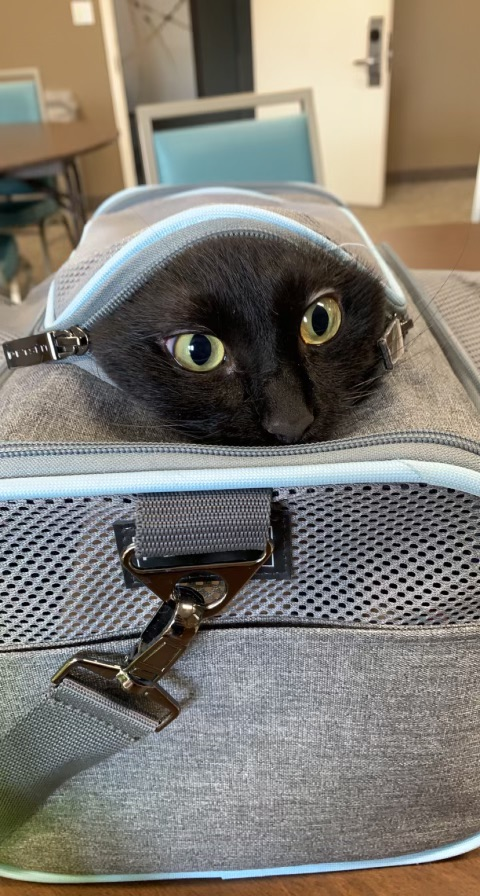
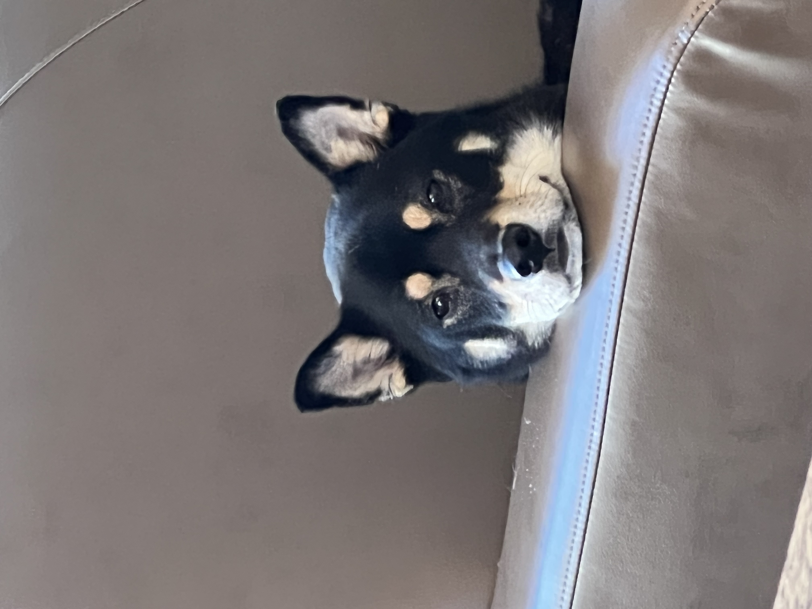

Ash the Hallway Cat
Ash is a black cat that roams my apartment hallways. He's somehow always ready to greet me or my roommate and likes to run down the stairs to say Hi.
If we're not fast enough, he will run into our apartment and hide somewhere. Ash won the cutest pet for our apartments, and I'm inclined to agree.
Photo Gallery


Likes
- Stairs
- Exploring
- Sneaking into my apartment
Rocket

Rocket (also named huihui) is a 6-month pomeranian puppy with big eyes and a small, black cute nose. Rocket is named rocket because he runs so fast and energetic all day without even having some rest. Rocket loves to carry his little toy walking around the house and jumping towards my bed.
Rocket is friendly to all human beings. He will be a little shy at first, but will "say hi" to you after a few seconds. He is also friendly to dogs, especially the small breed, because the large size dogs are hard for him to smell lol. If you meet rocket, don’t hesitate to say hi to him!! He will be super happy the whole day.
Photo Gallery


Likes
- Chewing bones
- Chasing
- Running
Cody

Cody is a 7yr old Pembroke Corgi. He was born in Cavalier Farms, Seattle. He prefers to spend his days lounging on the bean bag. Every day, he enjoys two walks around the neighborhood and likes to make friends with other doggie friends. If lucky enough, he might see the cyclist, but he is not allowed to give chase.
Cody loves traveling. He enjoys walking on the beach and taking sun naps. But he hates cold weather. He would like to stay at home lounging by the fireplace in winter.
Photo Gallery


Likes
- Travling
- Lounging
- Tennis balls
Chako
With a coat as dark as midnight but eyes as bright as stars, he seemed to embody both the mystery and the exuberance of life itself. Agile and playful, he danced around the park as if the grass were his personal stage, captivating everyone with his vivacity.
Yet, when at home, Chako transformed into a zen master. He would curl up on his favorite rug, eyes half-closed in contemplation, as if solving the great puzzles of the universe. Both spirited and serene, Mochi was a living testament to the richness of dualities, teaching his human companions that one could be many things all at once.
Photo Gallery


Likes
- Sleep
- Play
- Eat
Bacon Q Dog

Bacon Q. Dog is a 9yr old labradoodle. He prefers to spend his days lounging among the three different beds/couches that his family has gifted him. He enjoys a walk or two around the neighborhood, as long as he can pretend that he doesn't see any of the other animals to avoid the embarrassment of not wanting to admit he has no wolf-like skills in chasing them.
At night just as the rest of the family is ready to relax, Bacon suddenly wants to release all of his energy. He will place his toys on a mini couch and frantically drag the couch around, giving his toys "a ride." There is also a lot of rolling. Lots and lots of rolling.
Photo Gallery


Likes
- Belly rubs
- Playing tug-of-war
- Sneaking onto the couch